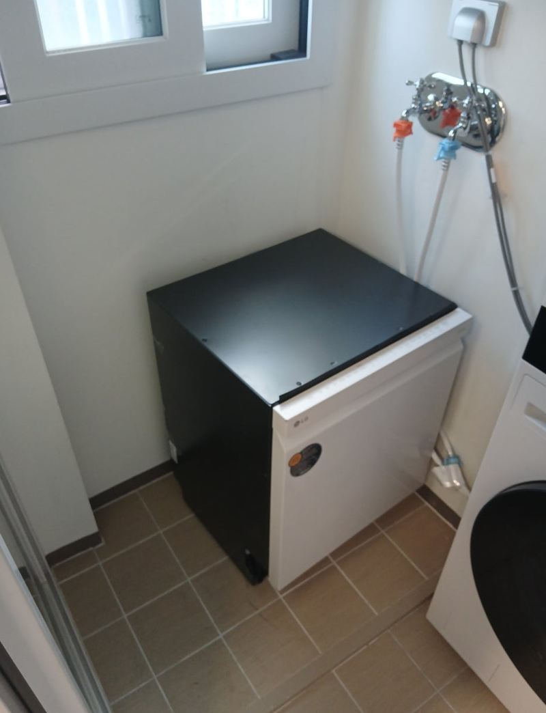
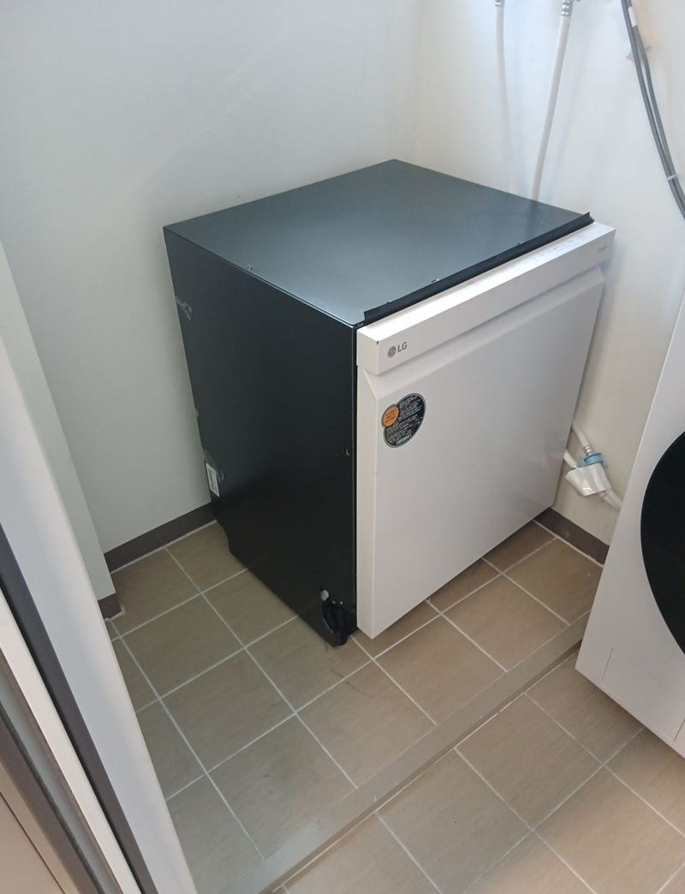
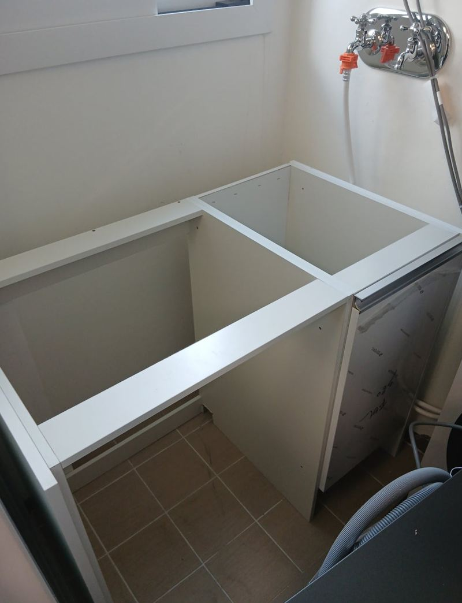
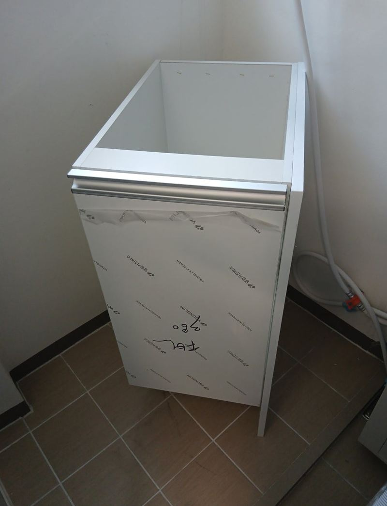
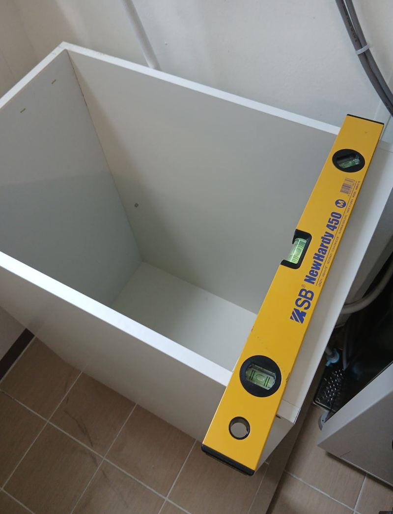
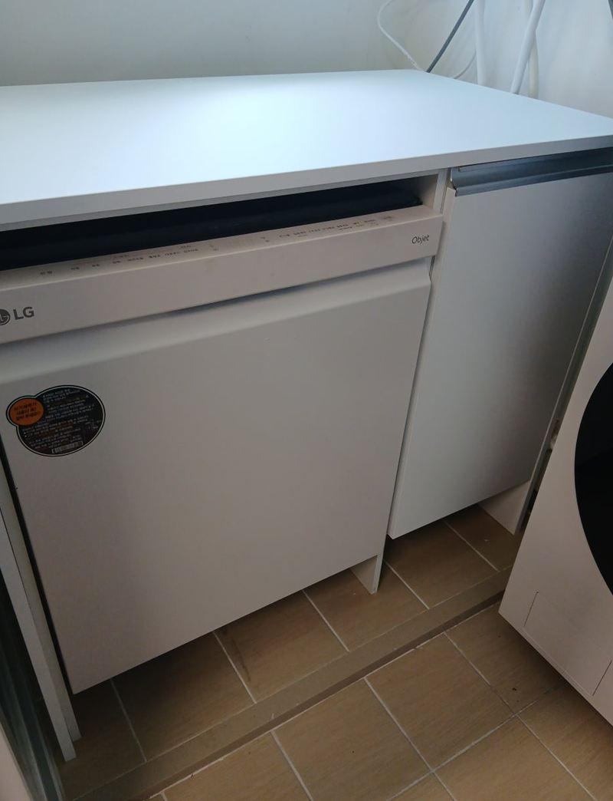

강동 베란다 식기세척기장 제작 설치 방법
← 밀어서 전후 비교 →
"주방엔 자리가 없어서 식세기를 베란다로 빼고 싶어요. 세탁기랑 물을 같이 써도 되는지, 물 빠지는 건 괜찮은지 궁금해요. 이왕이면 수납도 되게 장으로 짜 주세요." 강동 상일동 아파트였어요. 세탁기 옆 베란다 코너가 비어 있었고, 그 옆에 수전과 배수구가 있었어요. 식기세척기가 들어갈 장과 옆 수납 선반을 맞춰 짜 넣고, 세탁기와 함께 쓸 수 있게 급수·배수를 나눠 연결했어요.
| 현장 | 서울 강동구 상일동 아파트 세탁실 쪽 베란다 |
|---|---|
| 요청 | 식기세척기 자리 + 수납, 세탁기와 함께 사용 |
| 한 일 | 실측 → 장·선반 제작 → 현장 조립·하부 보강 → 바닥·벽 고정 → 배수 타공·커넥터 연결 → 급수 분기 → 누수·작동 테스트 |
| 상판 | 대리석도 안내했으나 고객 선택으로 나무 상판 |
식기세척기, 베란다에 둬도 될까
주방에 자리가 없으면 베란다는 좋은 대안이에요. 싱크대 상판을 뚫거나 하부장을 뜯지 않아도 되고, 이사할 때 떼어 내 원래대로 돌리기도 쉬워요. 다만 아무 데나 올려 두면 안 되고, 세 가지를 먼저 봐야 해요.
| 확인할 것 | 이유 |
|---|---|
| 급수 라인 | 세탁기 수전에서 나눠 쓸 수 있는지 |
| 배수구 위치·경사 | 물이 거꾸로 올라오지 않게 |
| 콘센트 | 가까운 곳에 전원이 있는지, 따로 끌어와야 하는지 |


식세기장 짜 넣는 순서
실측과 제작
식기세척기 크기와 코너 폭을 재서, 세척기 칸과 옆 수납 선반을 함께 만들었어요.
조립과 하부 보강
식기세척기는 물을 채우면 꽤 무거워요. 바닥판 아래를 보강해 처지지 않게 했어요.


수평과 고정
베란다 바닥은 배수 쪽으로 기울어 있어요. 수평을 맞춘 뒤 바닥과 벽에 함께 고정했어요.

세척기 넣고 상판
세척기를 넣고 나무 상판을 얹어 위를 작업대처럼 쓸 수 있게 했어요.

세탁기와 함께 쓰는 급수·배수
세탁기와 식기세척기가 배수를 한 구멍으로 같이 쓰면, 한쪽에서 물을 뺄 때 다른 쪽으로 역류할 수 있어요. 그래서 배수구에 구멍을 따로 내고 커넥터로 연결해 두 기기의 배수 길을 나눴어요. 급수도 수전에서 나눠 각각 연결했어요. 연결 뒤 여러 번 돌려 보며 이음부에서 물이 새지 않는지 확인했어요.
마지막으로 문과 수납 칸, 흔들림을 보고 남은 자재를 정리했어요. 고객분은 "주방이 좁아 걱정했는데 수납까지 생겼고, 세탁기랑 같이 써도 물이 안 샌다"며 만족하셨어요.
베란다 설치가 잘 맞는 집
- 주방 하부장에 자리가 없어요상판 타공 없이 둘 수 있어요.
- 전세·월세예요이사할 때 떼어 내 원래대로 돌리기 쉬워요.
- 세탁실 쪽 수전이 가까워요급수·배수를 짧게 연결할 수 있어요.
설치 후 이렇게 써 주세요
- 배수 호스 확인처음 몇 번 돌릴 때 배수 연결부에 물이 비치지 않는지 봐 주세요.
- 상판 위 물기나무 상판은 물이 고이지 않게 바로 닦아 주세요.
베란다 식기세척기 질문
겨울에 얼지 않을까요?
확장 안 된 베란다는 한겨울 동파 위험이 있어요. 배수 호스에 물이 고이지 않게 하고, 추운 날엔 사용 후 관리가 필요해요.
상판을 대리석으로 할 수 있나요?
가능해요. 물이 많이 닿는 자리라 대리석이 관리는 편해요.
콘센트가 멀어요.
전원을 끌어오는 작업이 따로 필요할 수 있어요. 위치 사진을 보내 주세요.
세탁기 위에 올려도 되나요?
진동과 무게 때문에 권하지 않아요. 바닥에 받침장을 짜는 게 안전해요.
배수 호스 냄새가 올라와요.
배수구 연결부가 헐거우면 냄새가 올라와요. 커넥터로 단단히 물리면 줄어요.
나중에 철거할 수 있나요?
장을 떼고 배수 구멍을 정리하면 원래 상태에 가깝게 돌릴 수 있어요.
문짝을 달 수도 있나요?
옆 수납 칸에 문을 달아 깔끔하게 가릴 수 있어요.
다른 식기세척기 현장
베란다 자리와 수전·배수구·콘센트 위치를 찍어 보내 주세요.
전화 상담 010-4517-9872